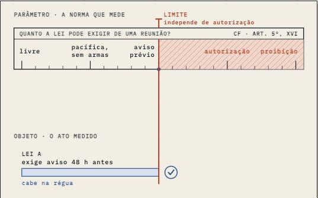
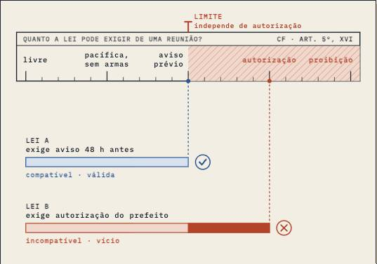
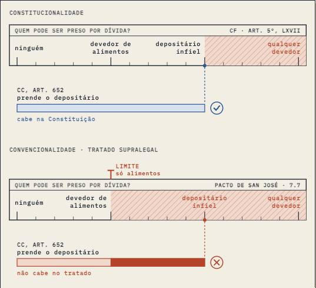

Controle de Constitucionalidade · aula-01
Conceito
3,180 words, one sitting · 8 chapters · 3 figures, 0 saying what they do · nothing quoted from a source · a quiz
built on2.0
on01/10
byCodex
generation2 Sequoia
commits30
how it's built
- 1O curso224 w
- 2Três peças: objeto, parâmetro, controlador508 w
- 3Por que a comparação é vertical304 w
- 4Conformidade ou vício574 w
- 5Quem controla, quando e como496 w
- 6Qual é o parâmetro?376 w
- 7Um caso do começo ao fim284 w
- 8Recapitulação336 w
its figures



what it quotes
- Nothing quoted on the page.
prepared for it · 6 chapters
- primarylenza-esquematizado-2022 · § 6.1
- primarymendes-branco-curso-2023 · PDF 1853–1855
- primarymendes-branco-curso-2023 · PDF 1855–1860
- primarymendes-branco-curso-2023 · PDF 1860–1862
- primarymendes-branco-curso-2023 · PDF 1862–1867
- supportingbarroso-controle-2012 · PDF 20–22
the course, as I read it
Its drawings are now the house's; its text is still mostly slide notes.
its checks
negated inference 0.9 / 0.5
gap talk 0.0 / 0.1
contrast tail 0.0 / 0.5
staged reveal 8.4 / 8.0
its life
- 15/10The turn: a folded corner and ⌘⇧K turn every page to its backstage and back
- 15/10First screen: one-line titles, marker yellow, Controle card by form, no past dates
- 15/10Controle: one visible panel per stage at load; A03 Fig. 1 redrawn
- 07/10Paper scrolls with the text in portrait, pinned elsewhere
- 06/10WIDE-4: reading column halfway (1,083 px)
- 06/10FRONT-C1 + WIDE-3: Controle planta on phones; standalone desktop text ~2x wide
- 06/10Controle A01: house style (terms, casa.css)
- 05/10WIDE-2: centred reading column on desktop for standalone text
nextsource blocks · opening bet (my note of 14/10: rebuild from compendium)